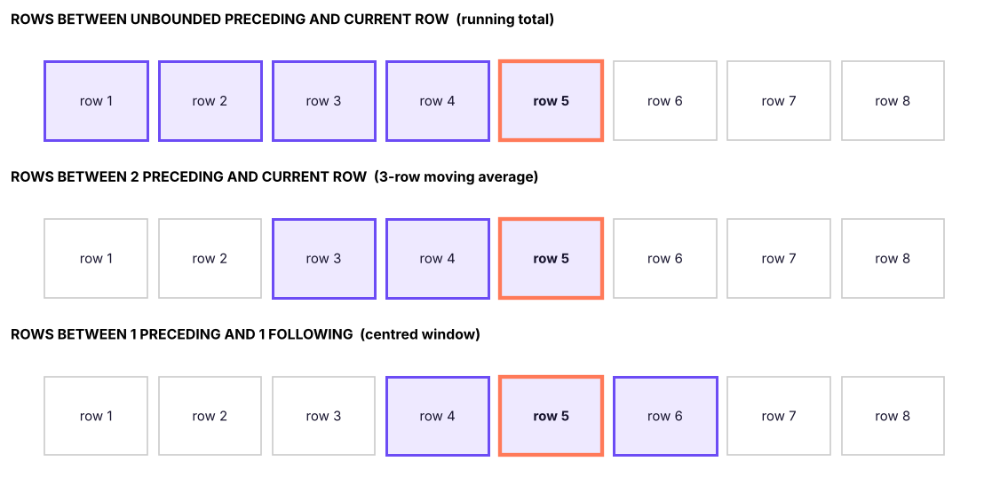
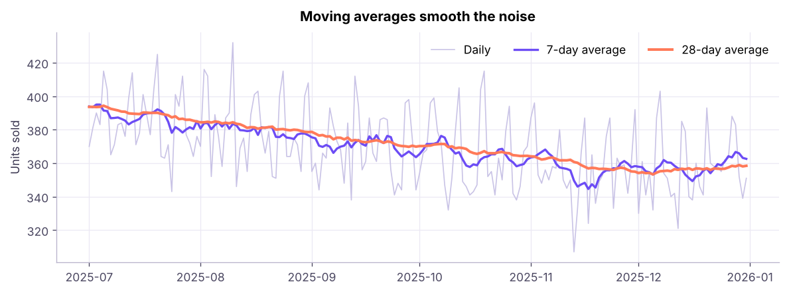

Window Functions II: Running Totals, LEAD, LAG & Frames
Build time-series analytics in SQL. Use window frames (ROWS BETWEEN) for running totals and moving averages, LAG and LEAD for month-on-month and year-on-year growth, FIRST_VALUE and LAST_VALUE, cumulative percentages, PERCENT_RANK, CUME_DIST and PERCENTILE_CONT, and gaps-and-islands patterns.
● SQL class 5–6✦ SQL Server 2022, 2026Advanced⏱ 130 min
Inside OVER, ORDER BY defines the order and an optional frame defines which rows around the current row the function uses.
SQL
SUM(x) OVER (PARTITIONBY p ORDERBY d
ROWSBETWEEN <start> AND <end>)
Frame boundary
Meaning
UNBOUNDED PRECEDING
From the first row of the partition
n PRECEDING
n rows before the current row
CURRENT ROW
The current row
n FOLLOWING
n rows after
UNBOUNDED FOLLOWING
To the last row of the partition

Frames relative to the current row (highlighted). A running total uses everything up to the current row; a 3-row moving average uses the previous two rows plus the current one.
Common mistakesThe default frame trap
When ORDER BY is present and no frame is written, SQL Server uses RANGE BETWEEN UNBOUNDED PRECEDING AND CURRENT ROW. RANGE treats rows with the same ORDER BY value as peers and includes them all, which gives surprising results with ties, and LAST_VALUE then returns the current row's value. For running totals always write ROWS BETWEEN UNBOUNDED PRECEDING AND CURRENT ROW explicitly; it is also much faster.
Running totals
First build the monthly sales table, then add a running (cumulative) total and a share:
SQL
WITH monthly AS (
SELECTYEAR(order_date) AS yr, MONTH(order_date) AS mth, SUM(sales) AS sales
FROM superstore
GROUPBYYEAR(order_date), MONTH(order_date)
)
SELECT yr, mth,
ROUND(sales, 0) AS sales,
ROUND(SUM(sales) OVER (PARTITIONBY yr ORDERBY mth
ROWSBETWEENUNBOUNDEDPRECEDINGANDCURRENTROW), 0) AS ytd_sales,
ROUND(100.0 * SUM(sales) OVER (PARTITIONBY yr ORDERBY mth
ROWSBETWEENUNBOUNDEDPRECEDINGANDCURRENTROW)
/ SUM(sales) OVER (PARTITIONBY yr), 1) AS ytd_pct_of_year
FROM monthly
ORDERBY yr, mth;
Result
yr
mth
sales
ytd_sales
ytd_pct_of_year
2023
1
2,447,151
2,447,151
4.2
2023
2
3,861,852
6,309,002
10.9
2023
3
3,441,306
9,750,308
16.9
2023
4
3,927,557
13,677,865
23.7
2023
5
4,840,130
18,517,994
32.1
2023
6
5,785,712
24,303,706
42.2
2023
7
5,390,409
29,694,115
51.5
2023
8
4,129,386
33,823,500
58.7
2023
9
5,714,731
39,538,231
68.6
2023
10
5,134,331
44,672,561
77.5
2023
11
5,815,308
50,487,869
87.6
2023
12
7,152,348
57,640,217
100.0
2024
1
6,022,738
6,022,738
9.2
2024
2
2,463,147
8,485,885
13.0
36 rows × 5 columns (first 14 shown)
PARTITION BY yr restarts the running total every January (year-to-date). The percentage uses a second window (the whole year) as the denominator.
Moving averages
A moving average smooths noisy data and shows the trend. Here is the 7-day average of daily units sold:
SQL
SELECTdate, units_sold,
ROUND(AVG(units_sold * 1.0) OVER (ORDERBYdateROWSBETWEEN6PRECEDINGANDCURRENTROW), 1) AS avg_7_day
FROM daily_sales
WHEREdate >= '2025-11-01'ORDERBYdate;
Result
date
units_sold
avg_7_day
2025-11-01
387
387.0
2025-11-02
396
391.5
2025-11-03
353
378.7
2025-11-04
348
371.0
2025-11-05
356
368.0
2025-11-06
350
365.0
2025-11-07
358
364.0
2025-11-08
357
359.7
61 rows × 3 columns (first 8 shown)

Daily units sold and the 7-day and 28-day moving averages (last 6 months of 2025). The weekly pattern (weekend peaks) disappears in the averages; the 28-day line shows the trend.
The first six rows of a 7-row window have fewer than seven rows available: SQL averages whatever exists (partial windows). Check COUNT(*) OVER (...) if you need to exclude them.
LAG and LEAD: compare with previous and next rows
Function
Returns
LAG(col, n, default)
The value n rows before the current row (default n = 1)
LEAD(col, n, default)
The value n rows after
SQL
WITH monthly AS (
SELECTYEAR(order_date) * 100 + MONTH(order_date) AS ym, SUM(sales) AS sales
FROM superstore
GROUPBYYEAR(order_date) * 100 + MONTH(order_date)
)
SELECT ym,
ROUND(sales, 0) AS sales,
ROUND(LAG(sales) OVER (ORDERBY ym), 0) AS prev_month,
ROUND(100.0 * (sales - LAG(sales) OVER (ORDERBY ym)) / LAG(sales) OVER (ORDERBY ym), 1) AS mom_pct,
ROUND(LAG(sales, 12) OVER (ORDERBY ym), 0) AS same_month_last_year,
ROUND(100.0 * (sales - LAG(sales, 12) OVER (ORDERBY ym)) / LAG(sales, 12) OVER (ORDERBY ym), 1) AS yoy_pct,
ROUND(LEAD(sales) OVER (ORDERBY ym), 0) AS next_month
FROM monthly
ORDERBY ym;
Result
ym
sales
prev_month
mom_pct
same_month_last_year
yoy_pct
next_month
202301
2,447,151
NULL
NULL
NULL
NULL
3,861,852
202302
3,861,852
2,447,151
57.8
NULL
NULL
3,441,306
202303
3,441,306
3,861,852
-10.9
NULL
NULL
3,927,557
202304
3,927,557
3,441,306
14.1
NULL
NULL
4,840,130
202305
4,840,130
3,927,557
23.2
NULL
NULL
5,785,712
202306
5,785,712
4,840,130
19.5
NULL
NULL
5,390,409
202307
5,390,409
5,785,712
-6.8
NULL
NULL
4,129,386
202308
4,129,386
5,390,409
-23.4
NULL
NULL
5,714,731
202309
5,714,731
4,129,386
38.4
NULL
NULL
5,134,331
202310
5,134,331
5,714,731
-10.2
NULL
NULL
5,815,308
202311
5,815,308
5,134,331
13.3
NULL
NULL
7,152,348
202312
7,152,348
5,815,308
23.0
NULL
NULL
6,022,738
36 rows × 7 columns (first 12 shown)
MoM compares with LAG(sales, 1); YoY compares with LAG(sales, 12) when there is exactly one row per month. This is the SQL equivalent of the pivot table's "Difference From" settings (Excel Lesson 8).
The first row has no previous value, so LAG returns NULL (or the default you supply: LAG(sales, 1, 0)).
Watch outGaps in the data
LAG(sales, 12) assumes every month exists. If a month has no sales it also has no row, so LAG(12) points at the wrong month. Build a calendar table (a list of every month) and LEFT JOIN the sales onto it first.
Time between events
"How many days passed between each customer's consecutive orders?"
SQL
WITH o AS (
SELECT customer_id, order_date,
LAG(order_date) OVER (PARTITIONBY customer_id ORDERBY order_date) AS prev_order
FROM orders
)
SELECTCOUNT(*) AS repeat_orders,
ROUND(AVG(DATEDIFF(day, prev_order, order_date) * 1.0), 1) AS avg_days_between_orders,
MIN(DATEDIFF(day, prev_order, order_date)) AS shortest_gap,
MAX(DATEDIFF(day, prev_order, order_date)) AS longest_gap
FROM o
WHERE prev_order ISNOTNULL;
Result
repeat_orders
avg_days_between_orders
shortest_gap
longest_gap
2415
186.6
0
1001
1 rows × 4 columns
FIRST_VALUE, LAST_VALUE, NTH_VALUE
SQL
SELECT department, emp_id, monthly_income,
FIRST_VALUE(emp_id) OVER (PARTITIONBY department ORDERBY monthly_income DESC) AS top_earner,
LAST_VALUE(emp_id) OVER (PARTITIONBY department ORDERBY monthly_income DESCROWSBETWEENUNBOUNDEDPRECEDINGANDUNBOUNDEDFOLLOWING) AS lowest_earner,
monthly_income - FIRST_VALUE(monthly_income) OVER (PARTITIONBY department ORDERBY monthly_income DESC) AS gap_to_top
FROM employees
ORDERBY department, monthly_income DESC;
Result
department
emp_id
monthly_income
top_earner
lowest_earner
gap_to_top
Finance
E00519
209833
E00519
E00322
0
Finance
E00145
185500
E00519
E00322
-24333
Finance
E00336
174417
E00519
E00322
-35416
Finance
E00201
169500
E00519
E00322
-40333
Finance
E01172
168167
E00519
E00322
-41666
Finance
E01151
155167
E00519
E00322
-54666
Finance
E00759
152083
E00519
E00322
-57750
Finance
E01004
144667
E00519
E00322
-65166
1,500 rows × 6 columns (first 8 shown)
LAST_VALUE needs the explicit full frame (UNBOUNDED FOLLOWING); with the default frame it just returns the current row.
Distribution functions
Function
Meaning
PERCENT_RANK()
(rank − 1) ÷ (rows − 1): 0 for the lowest, 1 for the highest
CUME_DIST()
Share of rows with a value ≤ the current one
PERCENTILE_CONT(p) WITHIN GROUP (ORDER BY x) OVER (…)
Interpolated percentile (e.g. median at p = 0.5)
PERCENTILE_DISC(p) …
An actual value from the data
SQL
SELECTDISTINCT department,
ROUND(PERCENTILE_CONT(0.5) WITHIN GROUP (ORDERBY monthly_income) OVER (PARTITIONBY department), 0) AS median_income,
ROUND(AVG(monthly_income) OVER (PARTITIONBY department), 0) AS mean_income
FROM employees
ORDERBY department;
Result
department
median_income
mean_income
Finance
77,709
83,681
HR
86,833
87,805
IT
68,750
79,051
Operations
92,667
92,461
R&D
70,250
80,255
Sales
74,709
82,448
6 rows × 3 columns
In SQL Server, PERCENTILE_CONT is a window function (needs OVER); PostgreSQL uses it as an aggregate (GROUP BY). Mean above median is the signature of a right-skewed distribution (Statistics, ML track).
Cumulative share: the Pareto in SQL
Which products produce the first 80% of sales?
SQL
WITH p AS (
SELECT product_id, SUM(sales) AS sales FROM order_items GROUPBY product_id
), c AS (
SELECT product_id, sales,
SUM(sales) OVER (ORDERBY sales DESCROWSBETWEENUNBOUNDEDPRECEDINGANDCURRENTROW) * 1.0 / SUM(sales) OVER () AS cum_share,
ROW_NUMBER() OVER (ORDERBY sales DESC) AS rnk
FROM p
)
SELECTCOUNT(*) AS products_for_80pct_of_sales,
(SELECTCOUNT(*) FROM p) AS total_products
FROM c
WHERE cum_share <= 0.8;
Result
products_for_80pct_of_sales
total_products
20
78
1 rows × 2 columns
Gaps and islands: streaks
A classic: find runs of consecutive days. The trick is that date − ROW_NUMBER() is constant within a streak.
SQL
WITH days AS (
SELECTDISTINCT order_date AS d FROM orders WHERE order_date >= '2025-12-01'
), g AS (
SELECT d, DATEADD(day, -ROW_NUMBER() OVER (ORDERBY d), d) AS grp FROM days
)
SELECTMIN(d) AS streak_start, MAX(d) AS streak_end, COUNT(*) AS days_in_streak
FROM g
GROUPBY grp
ORDERBY streak_start;
Result
streak_start
streak_end
days_in_streak
2025-12-01
2025-12-31
31
1 rows × 3 columns
Each group of consecutive order days becomes one row: all of December 2025 had orders every day, so there is a single streak. The same pattern finds consecutive login days, uninterrupted employment spells and missing-sequence ranges.
Summary
Key takeaways
Frames (ROWS BETWEEN … AND …) choose the rows around the current row; always write ROWS BETWEEN UNBOUNDED PRECEDING AND CURRENT ROW for running totals (the default RANGE frame includes ties).
Running totals, YTD, cumulative % and moving averages use aggregate functions with frames.
LAG/LEAD read the previous/next row (MoM, YoY, time between events); fill calendar gaps first.
FIRST_VALUE/LAST_VALUE need an explicit full frame for LAST_VALUE.
PERCENT_RANK, CUME_DIST, PERCENTILE_CONT describe position and median within a distribution.
Gaps and islands: value − ROW_NUMBER() is constant within a consecutive run.
Quick quiz6 questions · tap an answer to check it
1. Which frame gives a 3-month moving average (current and two previous rows)?
Answer: B. Two preceding rows plus the current row make three rows.
2. What does LAG(sales, 12) OVER (ORDER BY ym) return for monthly data?
Answer: B. LAG reads n rows back; with one row per month that is 12 months earlier.
3. Why does LAST_VALUE often return the current row's value?
Answer: A. Specify ROWS BETWEEN UNBOUNDED PRECEDING AND UNBOUNDED FOLLOWING.
4. How do you restart a running total every year?
Answer: B. Each partition has its own running total.
5. In the gaps-and-islands trick, what stays constant inside a streak of consecutive dates?
Answer: C. Both increase by 1 per row, so their difference is constant.
6. Mean income is much higher than median income. What does that suggest?
Answer: B. A long right tail pulls the mean above the median.
ExerciseTime-series practice
(1) Monthly sales per region with MoM %; (2) for each customer, the days since their previous order and a flag for "returned within 30 days"; (3) a 3-month moving average of sales by category; (4) the month when cumulative 2025 sales first exceeded ₹5 crore.
Show solution
SQL
-- (1)WITH m AS (SELECT region, YEAR(order_date)*100+MONTH(order_date) AS ym, SUM(sales) AS sales FROM superstore GROUPBY region, YEAR(order_date)*100+MONTH(order_date))
SELECT region, ym, ROUND(sales,0) AS sales,
ROUND(100.0*(sales - LAG(sales) OVER (PARTITIONBY region ORDERBY ym)) / LAG(sales) OVER (PARTITIONBY region ORDERBY ym), 1) AS mom_pct FROM m ORDERBY region, ym;
-- (2)WITH o AS (SELECT customer_id, order_date, LAG(order_date) OVER (PARTITIONBY customer_id ORDERBY order_date) AS prev FROM orders)
SELECT customer_id, order_date, DATEDIFF(day, prev, order_date) AS days_since_prev,
CASEWHENDATEDIFF(day, prev, order_date) <= 30THEN1ELSE0ENDAS within_30_days FROM o WHERE prev ISNOTNULL;
-- (3)WITH m AS (SELECT category, YEAR(order_date)*100+MONTH(order_date) AS ym, SUM(sales) AS sales FROM superstore GROUPBY category, YEAR(order_date)*100+MONTH(order_date))
SELECT category, ym, AVG(sales) OVER (PARTITIONBY category ORDERBY ym ROWSBETWEEN2PRECEDINGANDCURRENTROW) AS ma3 FROM m;
-- (4)WITH m AS (SELECTMONTH(order_date) AS mth, SUM(sales) AS sales FROM superstore WHEREYEAR(order_date) = 2025GROUPBYMONTH(order_date)),
c AS (SELECT mth, SUM(sales) OVER (ORDERBY mth ROWSBETWEENUNBOUNDEDPRECEDINGANDCURRENTROW) AS cum FROM m)
SELECTTOP1 mth FROM c WHERE cum > 50000000ORDERBY mth;
Interview cornerQuestions you may be asked
Q: How do you calculate a running total in SQL?SUM(x) OVER (ORDER BY d ROWS BETWEEN UNBOUNDED PRECEDING AND CURRENT ROW), optionally partitioned.
Q: How do you calculate month-on-month growth?
Aggregate to months, then (sales − LAG(sales) OVER (ORDER BY month)) / LAG(sales) OVER (ORDER BY month); use LAG(…, 12) for YoY.
Q: ROWS vs RANGE in a window frame?
ROWS counts physical rows; RANGE includes all rows with the same ORDER BY value as the current row (peers). ROWS is predictable and faster.
Q: How would you find consecutive login days?
Gaps and islands: date − ROW_NUMBER() OVER (PARTITION BY user ORDER BY date) as a group key, then GROUP BY it.
Practise more online
Free, trusted places to test yourself on this topic. Links open the original site in a new tab.